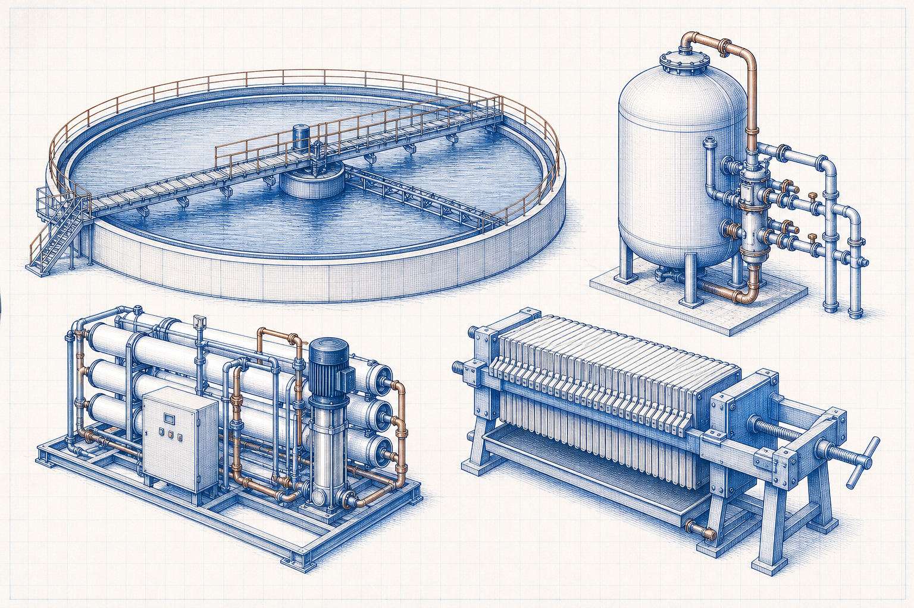

Level 2 equipment family
Water and Wastewater Equipment
Explore the separation, filtration, membrane and sludge-dewatering equipment used to treat industrial water and wastewater streams.

Explore by category
Equipment categories
01
Clarifiers
Circular clarifier bridges, scrapers, drives and the components of settling systems.
Open topic group →02Filters
Pressure sand-filter vessels, media, valves and the fundamentals of pressure filtration equipment.
Open topic group →03RO Systems
Reverse-osmosis membrane elements, pressure vessels and high-pressure pumps in RO units.
Open topic group →04Sludge Systems
Filter presses, plates, filter cloths and hydraulic components used for sludge dewatering.
Open topic group →